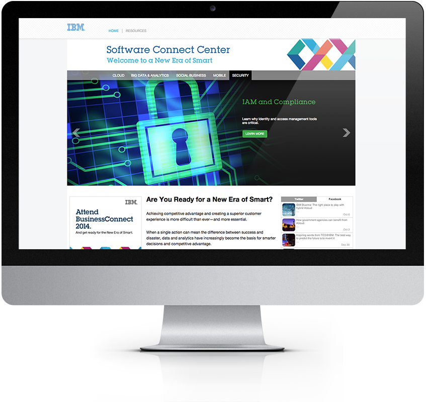
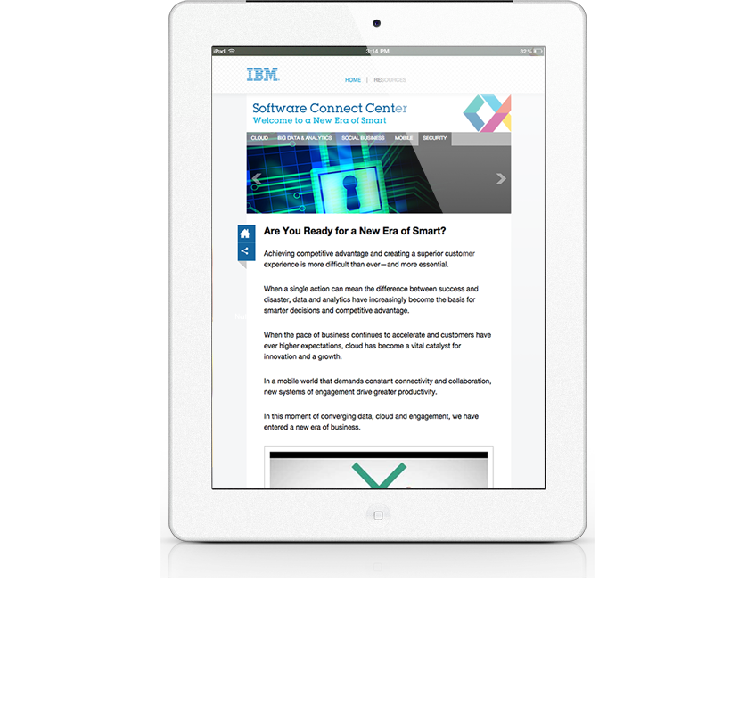
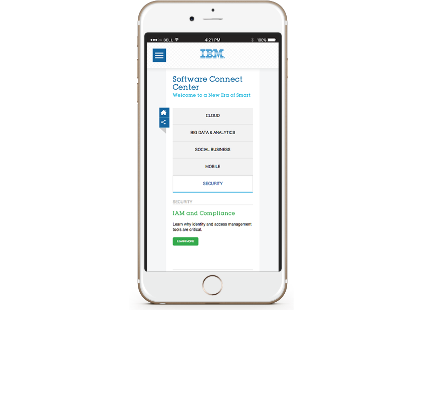

<!--Work Preview section-->
<section class="offset section">
			
	<!--Inner content-->
	<div class="innerContent">

		<!--Container-->
		<div class="container clearfix">
			<div class="sixteen columns">
				<div class="work-preview-close"></div>
			</div>
		</div>
		<!--Container-->
		
		<!--Container-->
		<div class="container clearfix">

			<div class="nine columns">

				<!--slider-->
				<div class="work-preview-slider clearfix flexslider" >

					<div>

						<ul class="slides">
							
							<li>
								
							</li>
							
							<li>
								
							</li>

							<li>
								
							</li>

						</ul>

					</div>
					
				</div>
				<!--slider-->

			</div>


			<div class="seven columns info">
				<h1 class="title">Web Development<br><span>Responsive Web Design</span></h1>
				<p>This is a custom built website for IBM. I developed a 3 page responsive template to coincide with the sites four page types (Home | Resources | Abstracts). This project also includes a custom responsive animatable image carousel and a custom dynamic video player</p>

				<p><a href="http://www.ibm-softwareconnect.com" target="_blank">View project</a></p>

				<!-- <div class="social-icons">
					<ul>
						<li><i class="step fi-heart"></i><span>100</span></li>
						<li><i class="step fi-social-facebook"></i><span>620</span></li>
						<li><i class="step fi-social-twitter"></i><span>450</span></li>
						<li><i class="step fi-social-pinterest"></i><span>100</span></li>
					</ul>
				</div> -->

			</div>


		</div>
		<!--Container-->
	
	</div>
	<!--Inner content-->

	
</section>